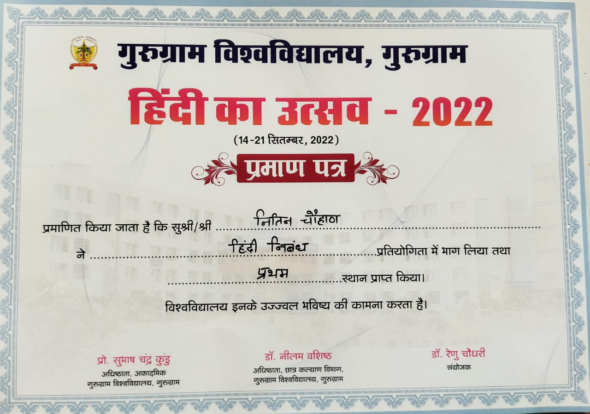

I participated in inter-departmental Essay Writing Competition on 'Rashtriya Hindi Divas, 2022'
and I stood 1st in that competition by competing with 100+ students.And the theme was 'Hindi Ka Mahtav' I feel honoured and thanks to
Gurugram University for organizing such events.
With above, I also participated in inter-departmental Poetry Competition on 'Rashtriya Hindi Divas, 2022'
and I stood 3rd in that competition by competing with 50+ students. And my theme for the poet was 'Vraksh (Trees)'.
I choose this theme because I considered this opportunity to be right to raise the issue of environment of cutting trees.
On the event of 'National Technology Day, 2023', I have Organised an inter-college Technical Quiz ( Techno Whiz) and I also gave my contribution to various other events such as Tech race (Coding challange), Projects showcase , Poster presentations etc.
to make this event successful. I and my whole team had very limited time(2 days) to organize these multiple competitions on same day. We had to manage budgets, and had to make the management better as 500+ students had registered for that event. But with all
these circumstances, we were able to make this event successful and got appereciated by our Dean Dr. Mukesh Kumar.
I have participated as Volunteer in 'Science Conclave and Agro-Tech Expo 2023, Rural Development through Science and Technology for 'Atmanirbhar Bharat'.
This National Conference was jointly organized by CSIR-NSCPR-Delhi, Gurugram University-Gurugram, and Department of Science and Technology-Haryana on 15 and 16th of march.
I get to know a lot about the advances in technology that are transforming the agricultural sector. I get to know the capabilities of AI in agricultural sector.
I had secured 98% marks and with that I was One of the block toppers in 12th standard. For this wonderful acheivement, MLA Sitaram Yadav Sir, School Chairman Tejpal Yadav Sir, ICDS Supervisor Vidhya Devi Mam appereciated my achievement. I got awarded by a momento and got
and opportunity to represent myself and my thoughts on education system in front of 1000+ people who took part in that wonderful event.
With all the above achievements, I actively participate in various activities such as I am NSS Unit-Gurugram University member.
One of the major event of NSS that I participated in was 'Meri Maati Mera Desh' organized by Govt. Of India on 31st October,2023.
With that I had also participated in Departmental Algorithm Challange (Recursion Games) on National Technology Day,2022 and I got 2nd rank. But unfoutunetly, noone received Certificates.